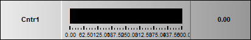

iTest User's Guide
The ADT Bar will display a channel name and its value using a digital value and a bar that changes length to indicate the channel’s magnitude. If configured, operators can change the value on the bar using sliders.
ADT Bar

General Tab Properties
| Option | Description |
| Value Channel | Click the ... button to open the Channel Selection dialog, which you can use to select the database channel whose data you want to display on the ADTBar. This is also the channel whose value is set if the Bar Style = Slider. |
| Units | Will display the unit that is defined for the value channel selected (if any). |
| Display Units | Gives you a choice between the defined unit for the selected value channel or Automatic, which is the unit defined in the System Options in iTest Console (Tools > Options >System Options). |
| Display Decimal Points | This setting supersedes the precision that is set for the channel. For example, if a channel is set to handle its values to six decimal places, the ADT Bar can override that with the precision set in this field. |
| Target Channel | Select the database channel that holds the target value for the control. |
| Bar Style | Select the type of bar: Solid Bar, Pointer, LED Segmented Bar, or Slider. |
| Control ID | Provides a unique name for the control. This name can be used in mailslot messages to change control properties during runtime on the iTest Console. |
| Label Field | Select a label for the control (Channel Name, Alias, Description, System Default, or Alias2) as defined for the database channel. |
| Orientation | Select the whether you want the bar to be Vertical or Horizontal. |
| Permit Runtime Changes | When selected, allows changes to be made programmatically. |
| Show Border | Visually shows the border around the control. |
Scale Tab Properties
| Option | Description |
| Min Value | Specify the low end of the ADTBar’s range. |
| Max Value | Specify the high end of the ADTBar’s range. |
| Num Major Tics | Specify the number of major tics on the bar. Distance between major tics is calculated by (Max Value - Min Value) / Num Major Tics. For example, if you specify 5 major tics and the Min Value is 0 and the Max Value is 200, then (200-0) / 5 = 40 so major tics will display at 40, 80, 120, 160, and 200. |
| Num Minor Tics | Specify the number of minor tics between major tics. |
| Label Every X Tics | Indicate how many major tics will be labeled. |
| Show Limits Bar | Displays the limit bar with the tic marks. The limit bar displays the limit and warning colors associated with value ranges for the Value Channel selected under the General tab. |
Tics Tab Properties
| Option | Description |
| Style | Select whether you want the major and minor tics to be a Line or a Bold Line. Tics will not display on the bar when you select <NONE>. |
| Length | Specify the length of the major and minor tics in pixels. This can extend over the bar. |
| Color | Displays the actual color selected. |
| Select Color | Specify the color of the major and minor tics. If you enabled the Limits option on the Scale tab, make sure that the tic colors are significantly different from the limit and warning colors. |
Slider Options Tab Properties
| Option | Description |
| Grab-Handle Style | Select the type of handle you want to display on the bar. This is the slider control that can be dragged during operation. |
| Slider Step Size | Specify the number of slider steps that get executed when a user clicks in the bar area on either side of the grab handle. |
| Update Mode | Indicate whether you want updates to ramp or take place immediately. This mode updates incrementally based on the Slider Step Size. |
| Release Change Rate | Specifies the change in value per second. This is only valid when the Update Mode is set to Ramped. |
| Show Arrow Buttons | When selected, arrow buttons display at the beginning and end of the bar. |
| Disable Slider | When selected, the slider cannot be manually moved during runtime on the iTest Console. |
Indicators Tab Properties
| Option | Description |
| Target Value Indicator | When Pointer is selected, an arrow above the bar indicates the value of the Target Channel specified on the General tab. |
| High Value Indicator | When Pointer is selected, an arrow above the bar indicates the highest channel value since the bar has been displayed. |
| Low Value Indicator | When Pointer is selected, an arrow above the bar indicates the lowest channel value since the bar has been displayed. |
Data Quality Tab Properties
| Option | Description |
| Show DQ Range | Click in this box to view channel data quality (in the same way you would view limits) on the ADT Bar. Selecting this feature will allow you to view data quality in runtime for any channel displayed in the ADT Bar for which a data quality range has been defined. The three Data Quality Types that allow you to define a range are High/Low, Between Tolerance in %, and Between Tolerance. |
| Data Quality Arc Color | Select a color to represent the data quality in this field. |
These properties are useful when issuing the following mailslot message:
\\.\mailslot\DisplayName>>$SETITEMPROPERTY ControlID PropertyName PropertyValue
The following are the names of the properties that can be changed by mailslot message to the display. These property names may or may not be the same as the property names shown on the display object property setup dialogs. Most of these property names are self-explanatory. The first column is the data type of the property.
The int or OLE_COLOR for color is the color RGB values. “BSTR” means the type of the property is string. “int”, “float”, “long”, “short”, “double” means the type of the property is number. “Boolean” means the property value should be 1 or 0.
Font property syntax is complicated.
<font name>,<bold>,,<italic>,<font size>,,<strikeout>,<underline>,
example: Arial,0,0,0,97500,0,0,0,400
ADT Bar Object Properties
| Type | Property | Notes |
| float | MinValue | - |
| float | MaxValue | - |
| float | TicInterval | - |
| long | TicsPerLabel | - |
| long | NumMajorIntervals | - |
| long | NumSubIntervals | - |
| bool | ShowLimitsBar | - |
| string | ChannelName | - |
| long | MinorTicStyle | - |
| long | MajorTicStyle | - |
| long | MinorTicColor | - |
| long | MajorTicColor | - |
| long | MinorTicLength | - |
| long | MajorTicLength | - |
| long | GrabHandleStyle | - |
| float | ReleaseChangeRate | - |
| float | SliderStepSize | - |
| bool | ShowArrowButtons | - |
| bool | DisableSlider | - |
| long | BarBackColor | - |
| font | RangeFont | - |
| font | BarFont | - |
| bool | LimitColorsActive | - |
| long | BarStyle | - |
| long | Orientation | - |
| long | UpdateMode | - |
| string | LabelField* | values are case-sensitive |
| long | BackColor1 | - |
| long | BackColor2 | - |
| long | ArrowColor | - |
| long | ArrowBackColor | - |
| long | BarColor | - |
| long | BarBackColor | - |
| long | PointerColor | - |
| long | SliderColor | - |
| long | TextColor | - |
| long | TargetStyle | values: 600,601,602 |
| long | HighStyle | values: 600,601,602 |
| long | LowStyle | values: 600,601,602 |
| long | TargetColor | - |
| long | HighColor | - |
| long | LowColor | - |
| long | ResetIndicators | - |
| string | TargetChannelName | - |
| long | Orientation | - |
| bool | ChangesOk | - |
| bool | ShowDQRange | - |
| long | DQArcColor | - |
| bool | ShowBorder | - |
| string | ChanDisplayUnit | - |
| string | TargetDisplayUnit | - |
| string | ValuePrecision | - |